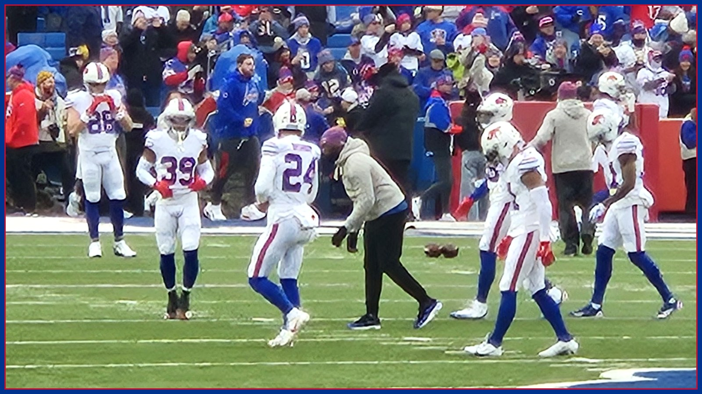

Buffalo signed three defensive backs on Halloween. That tells you today's real story.
Buffalo signed Te'Cory Couch and elevated Geno Stone and A.J. Woods on Saturday — a Halloween roster shuffle that says more about today's Ravens game than any prediction. With C.J. Gardner-Johnson suspended and Dee Alford trending out, the Bills rebuilt their secondary depth the night before Lamar Jackson returns.

Teams tell you what they are worried about by what they do on Saturday. On Saturday — Halloween, no less — the Buffalo Bills signed defensive back Te'Cory Couch to the active roster and elevated safety Geno Stone and cornerback A.J. Woods from the practice squad, according to the Bills' PR announcement. Three defensive backs, added in three different ways, the day before the Baltimore Ravens and a returning Lamar Jackson arrive at Highmark Stadium for a 1 PM ET kickoff on CBS. That is not front-office housekeeping. That is a coaching staff looking at its secondary board, looking at Sunday's quarterback, and deciding it needed every available body.
Start with why the room was thin in the first place. Buffalo plays today without C.J. Gardner-Johnson, whose one-game suspension was upheld on appeal — he is out for the Ravens game and eligible to return Nov. 2. Next to that absence sits the week's quiet downgrade: slot corner Dee Alford, questionable on Friday's final report after going limited Wednesday and then not practicing Thursday or Friday with an ankle injury. Sports Illustrated reported Alford will likely be unavailable today, and that veteran Damar Hamlin will start in Gardner-Johnson's place. Add it up and Jim Leonhard's back end was down a suspended starter and trending down a nickel corner before Baltimore's team plane even landed.
So look at who Buffalo called. Stone is the headline of the three, and not just because of the position he plays. Per the reporting on Saturday's moves, Stone is expected to help cover Gardner-Johnson's absence — and he comes with a rare kind of scouting report: he played for the Ravens from 2020 to 2023 before spending the past two seasons with Cincinnati. There is no pretending a practice-squad elevation fixes a secondary by himself. But a safety who has sat in Baltimore's meeting rooms, elevated specifically for the week Baltimore comes to town, is the kind of detail that matters on third down. Couch and Woods, meanwhile, give Leonhard nickel and dime flexibility if Alford cannot go — options, plural, instead of one emergency plan.
They will need them, because the test is the real one. Jackson was a full participant all three days this week, carries no game designation, and Baltimore head coach Jesse Minter announced Friday that he will play after missing three straight games with a high ankle sprain. Jackson said Friday he is excited to be back on the field with his teammates and wants to put the Ravens in the win column. Yesterday's Film Room piece on this site broke down the choice that creates — Derrick Henry downhill or Zay Flowers in space — and nothing about Saturday's moves changes the math. What the moves change is how many different answers Buffalo can line up behind that choice, snap after snap, for four quarters.
The last word on who actually plays arrives at about 11:30 AM ET with the inactives, and Buffalo's list runs deeper than the secondary. Six Bills carried questionable tags on Friday's final report: right tackle Spencer Brown (back), wide receiver DJ Moore (shoulder), tight end Dalton Kincaid (chest), Alford, defensive lineman Greg Gaines (calf) and outside linebacker TJ Parker (knee, per the written official table). There is optimism mixed in — Kincaid told ESPN's Jeremy Fowler he was 'pretty confident' he would be able to play, per the Democrat and Chronicle, and Friday reporting had Moore expected to play barring a pregame setback — but optimism is not an inactive list, and this desk will not print it as one.
What Buffalo does not have to wonder about is its front. Ed Oliver, back after missing two games with a knee injury, and Bradley Chubb both finished the week as full participants with no designation, per Friday's report — the middle of this defense is as whole as it has been in a month. And the setting favors the home team: Buffalo is 5-1, off its bye, averaging an NFL-best 32.8 points per game, and, per Sports Illustrated, the Bills have won their last 11 games coming off a bye — a streak all eight experts on SI's prediction panel picked to reach 12 today against a 4-3 Ravens team that has lost two straight.
None of that plays a snap in the secondary, and that is the point. Buffalo spent its Saturday making sure a suspended starter and a wobbling ankle did not turn into a Sunday emergency against the most dangerous returning quarterback in football. Couch is signed, Stone and Woods are up, Hamlin steps in, and at 11:30 the inactives will finish the sentence. Then, at 1 PM, we find out whether three Halloween roster moves were just insurance — or the quiet reason Buffalo is 6-1 by dinner. Go Bills.
The BNC Blitz is free: the day's Bills news, one stat that matters, and one take, every morning. Join to keep reading — and never miss the end of a story again.